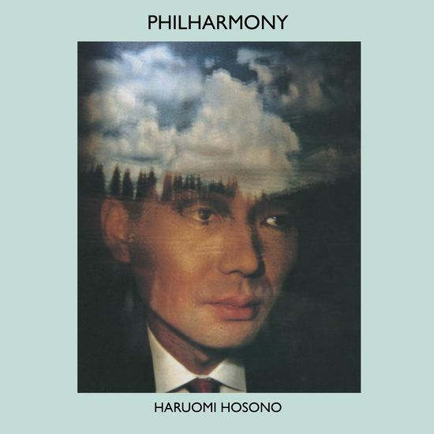
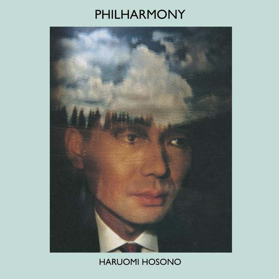
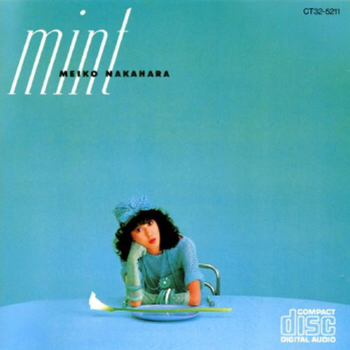

It seems you're using Google Chrome, because of this, you must click anywhere on the page before attempting to play music, due to Google Chrome's new autoplay-policy
〠 Hover over an album to listen to it, click it to enable permanent player, press F to enter fullscreen. 〠
 



